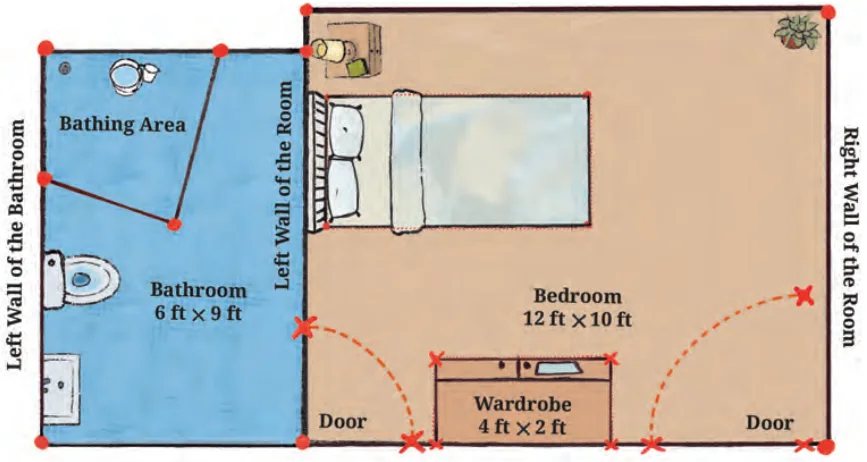

It is the beginning of the academic year and Reiaan is both excited and nervous. The family has just moved to a new city. He and his sister, Shalini, will be attending a new school. Today, Shalini will help him settle into the new environment. When someone is not able to see, this can be a very big challenge, but with their mother’s transferable job, the siblings have done it often, and it has become easier with each move. Shalini has just completed Grade 9 and this time, she decided to put to use what she has learnt in Coordinate Geometry in Mathematics to guide Reiaan. Shalini wanted Reiaan to feel the directions, so she used a rectangular grid on which she had fixed pins and threads. This showed
the floor of the room. Points in the sketch were marked using pins. Shalini was using a scale of 1 cm : 1 foot. She used pins to mark out various key points of the room. Points representing the corners of objects were connected with thick wool so that Reiaan could feel their positions with his fingers.

Let us examine Fig. 1.1 to understand the layout of the room. Notice that this only shows the map of the floor. Do you see why the position of the windows cannot be marked on this map?